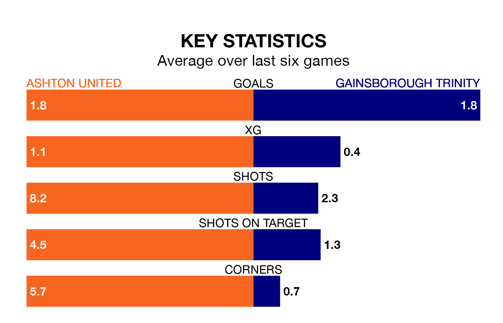

Gainsborough Trinity visit Ashton United at Hurst Cross on Saturday on the back of five consecutive wins in the Northern Premier League.
Gainsborough Trinity have picked up 15 points from their last six games, and they face an Ashton side who also won their last match, and have collected nine points from the last possible 18.
In the last 10 years, Ashton and Gainsborough Trinity have played each other on six occasions. They won two each, and they drew twice.
On average, Ashton scored 1.7 goals and the Blues 1.7 in those matches.
Their last meeting was on October 24, when they played out a 2-2 draw.
With 44 goals in 32 games so far this season, Gainsborough Trinity are scoring at below the league average rate with 1.4 goals per game. And they are conceding at an average rate, letting in 52 goals at a rate of 1.6 per game.
Ashton, meanwhile, are average scorers, with 1.6 goals per game. They have also conceded 1.6 goals per game.
The Blues are 14th in the table after 32 games, of which they have won 13 and drawn five, earning 44 points.
United are four places ahead of the visitors in 10th, with 13 wins and 10 draws putting them on 49 points.
Ashton's last match was on March 9, a 2-0 win against Worksop Town.
Gainsborough Trinity beat Whitby Town 1-0 last time out, also on March 9.
Updated: 15:10 (UTC), 15/03/24